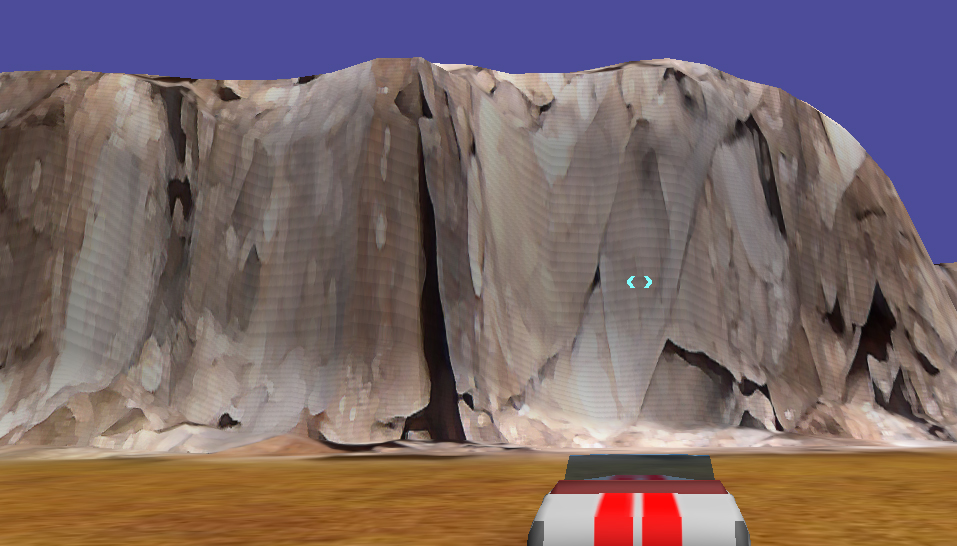
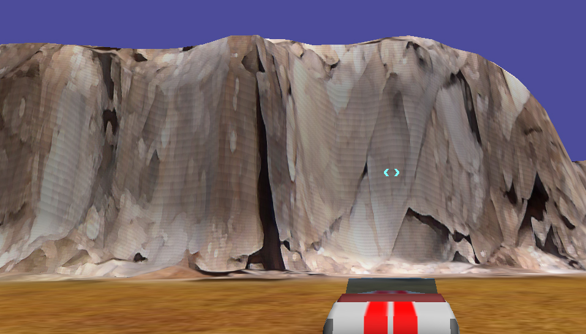

Lumak
I’m sure this has been discussed, but what is the shadow settings to remove the lines shown in the image? And shouldn’t the default setting be set so that such thing is not shown?


I’m sure this has been discussed, but what is the shadow settings to remove the lines shown in the image? And shouldn’t the default setting be set so that such thing is not shown?

Nvm, solved. twenty chars

Can you please tell how you solved?

Tweaking biases and distances, probably… That’s classic solution.

There is no basic setting that will cover all cases. This shadow acne artifact is very dependent on scene scale, geometry shape, light angle, and ways to fight it will vary too.

Could you please elaborate? I’d like to know what handles I’m to tweak with stuff like this…
Huh, let me recall…
Tweak
Depth Constant Bias
,
Depth Slope Bias
and
Normal Offset
parameters of
Light
component.
Make shadow distance smaller or use more cascades;
Increase depth buffer precision or resolution;
Use back face culling for shadow pass or vice versa.
This usually helps to reduce artifacts (bias artifacts and peter panning)
Thanks so much for the help!